Demo illustrating HAAR features
File : haar_featlist
---------------------------------------------
Haar features list parameters. Give all Haar features parameters for a Image I (ny x nx) and dictionary of Haar pattern given by rect_param
Usage ------
F = haar_featlist([ny] , [nx] , [rect_param]);
Inputs -------
ny Number of rows of the pattern (default ny = 24)
nx Number of columns of the pattern (default nx = ny)
rect_param Features rectangles parameters (10 x nR), where nR is the total number of rectangles for the patterns.
(default Vertical(2 x 1) [1 ; -1] and Horizontal(1 x 2) [-1 , 1] patterns)
rect_param(: , i) = [ip ; wp ; hp ; nrip ; nr ; xr ; yr ; wr ; hr ; sr], where
ip index of the current pattern. ip = [1,...,nP], where nP is the total number of patterns
wp width of the current pattern
hp height of the current pattern
nrip total number of rectangles for the current pattern ip
nr index of the current rectangle of the current pattern, nr=[1,...,nrip]
xr,yr top-left coordinates of the current rectangle of the current pattern
wr,hr width and height of the current rectangle of the current pattern
sr weights of the current rectangle of the current patternPlease run gui_features_dictionary in the \gui subdir to build such parameters
Outputs -------
F Features's list (6 x nF) in UINT32 where nF designs the total number of Haar features
F(: , i) = [if ; xf ; yf ; wf ; hf ; ir]
if index of the current feature, if = [1,....,nF] where nF is the total number of Haar features (see nbfeat_haar function)
xf,yf top-left coordinates of the current feature of the current pattern
wf,hf width and height of the current feature of the current pattern
ir index of rectangle definition of the current feature in rect_paramFile : haar
---------------------------------------------
Compute HAAR features of image I
Usage
------
z = haar(I , [options] );
Inputs -------
I Images (Ny x Nx x N) in UINT8 format
options
rect_param Features rectangles parameters (10 x nR), where nR is the total number of rectangles for the patterns.
(default Vertical(2 x 1) [1 ; -1] and Horizontal(1 x 2) [-1 , 1] patterns)
rect_param(: , i) = [ip ; wp ; hp ; nrip ; nr ; xr ; yr ; wr ; hr ; sr], where
ip index of the current pattern. ip = [1,...,nP], where nP is the total number of patterns
wp width of the current pattern
hp height of the current pattern
nrip total number of rectangles for the current pattern ip
nr index of the current rectangle of the current pattern, nr=[1,...,nrip]
xr,yr top-left coordinates of the current rectangle of the current pattern
wr,hr width and height of the current rectangle of the current pattern
sr weights of the current rectangle of the current pattern F Features's list (6 x nF) in UINT32 where nF designs the total number of Haar features
F(: , i) = [if ; xf ; yf ; wf ; hf ; ir]
if index of the current feature, if = [1,....,nF] where nF is the total number of Haar features (see nbfeat_haar function)
xf,yf top-left coordinates of the current feature of the current pattern
wf,hf width and height of the current feature of the current pattern
ir index of rectangle definition of the current feature in rect_paramstandardize Standardize Input Images 1 = yes, 0 = no (default = 1)
usesingle Output in single format if usesingle = 1 (default usesingle = 0)
transpose Transpose Output if tranpose = 1 (in order to speed up Boosting algorithm, default tranpose = 0)
If compiled with the "OMP" compilation flag
num_threads Number of threads. If num_threads = -1, num_threads = number of core (default num_threads = -1)
Outputs
-------
z Haar features matrix (nF x N) or (N x nF) (acoording to transpose option) in single/double format (according to usesingle options)
for each positions (y,x) in [1+h,...,ny-h]x[1+w,...,nx-w] and (w,h) integral block size.Contents
- First example : compute Haar features for nP type of patterns
- Second example : Display Haar features for a particular pattern scale
- Third example : Display a particular Haar feature computed on all the database
- Fourth example : Haar feature's computed on Face/Non-Face image
- Fifth example : Display Best Feature values computed on Viola-Jones database separating the 2 classes
- Sixth example : Display best Haar's Features from Adaboosting & FastAdaboosting
- Seventh example : FastAdaboosting on Haar's features with 2 different types of pattern
First example : compute Haar features for nP type of patterns
clear, close all,clc,drawnow load viola_24x24 options = load('haar_dico_2.mat'); nP = length(unique(options.rect_param(1 , :))); Ny = 24; Nx = 24; N = 200; options.F = haar_featlist(Ny , Nx , options.rect_param); pos = find(y == 1); neg = find(y == -1); I = (X(: , : , [pos(1:N) , neg(1:N)])); tic,z = haar(I , options);,toc imagesc(z) title(sprintf('Haar''s features with %d different patterns' , nP)); colormap(gray) % disp('Press key to continue') % pause
Elapsed time is 1.253557 seconds.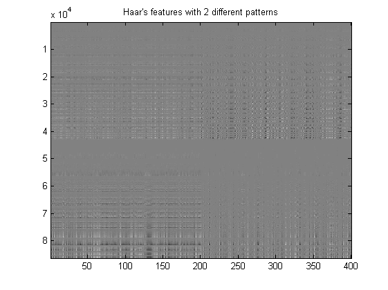
Second example : Display Haar features for a particular pattern scale
clear, close all load viola_24x24 options = load('haar_dico_2.mat'); nF = length(unique(options.rect_param(1 , :))); [Ny,Nx,P] = size(X); Nimage = 100; pattern = [2 ; 1]; FF = haar_featlist(Ny , Nx , options.rect_param); ind = find(sum(FF([4;5] , :) == repmat(pattern , 1 , size(FF , 2))) == 2); options.F = FF(: , ind); y = options.F(3 , :); x = options.F(2 , :); ind = (y + 1 + (x)*Ny)'; % index = repmat(ind , 1 , P) + repmat((0:Ny*Nx:Ny*Nx*(P-1))' , 1 , P); z = haar(X , options); Ihaar = zeros(Ny , Nx , P , class(z)); for i = 1:P Ihaar(ind + (i-1)*Ny*Nx) = z(: , i); Ihaar(: , : , i) = Ihaar(: , : , i)'; end figure display_database(X); title(sprintf('Original database')); figure display_database(Ihaar); title(sprintf('Haar feature''s with pattern [%d %d]' , pattern(1) , pattern(2))); % disp('Press key to continue') % pause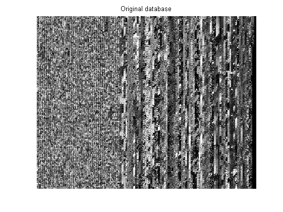 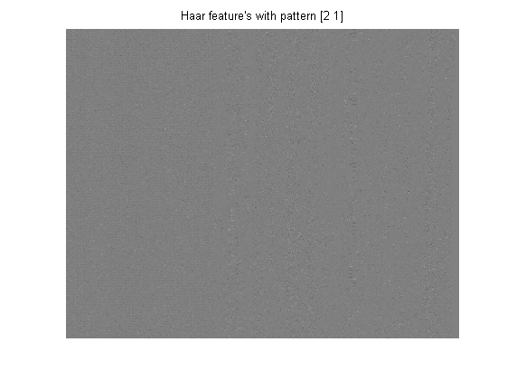
Third example : Display a particular Haar feature computed on all the database
clear, close all load viola_24x24 options = load('haar_dico_2.mat'); nP = length(unique(options.rect_param(1 , :))); Ny = 24; Nx = 24; nF = 1; FF = haar_featlist(Ny , Nx , options.rect_param); indpos = find(y == 1); indneg = find(y == -1); options.F = FF(: , nF); tic,z = haar(X , options);,toc plot(indpos , z(indpos) , indneg , z(indneg) , 'r') title(sprintf('Haar feature n=%d for %d different patterns' , nF , nP)); legend('Faces' , 'Non-faces') % disp('Press key to continue') % pause
Elapsed time is 0.047222 seconds.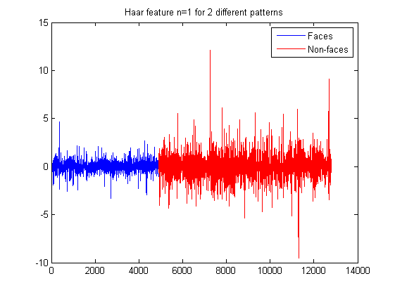
Fourth example : Haar feature's computed on Face/Non-Face image
clear, close all load viola_24x24 options = load('haar_dico_2.mat'); Ny = 24; Nx = 24; options.F = haar_featlist(Ny , Nx , options.rect_param); nF = size(options.F , 2); indpos = find(y==1); indneg = find(y==-1); tic,zpos = haar(X(: , : , indpos(1)) , options );,toc tic,zneg = haar(X(: , : , indneg(1)) , options );,toc figure plot((1:nF)' , zpos , (1:nF)' , zneg , 'r') title(sprintf('Haar feature''s computed on Face/Non-Face image')); legend('Positive' , 'Negative') % disp('Press key to continue') % pause
Elapsed time is 0.003197 seconds. Elapsed time is 0.003138 seconds.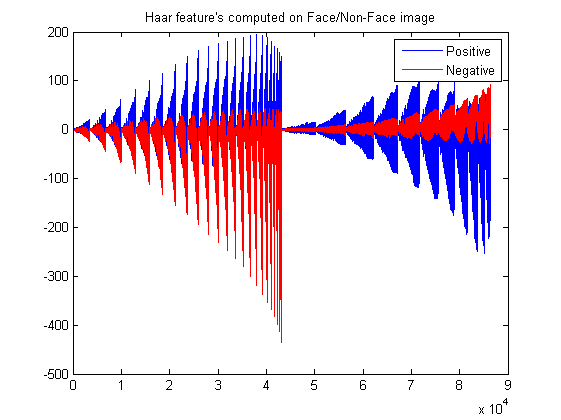
Fifth example : Display Best Feature values computed on Viola-Jones database separating the 2 classes
load viola_24x24 load model_detector_haar_24x24 options = load('haar_dico_2.mat'); bestFeat = model.param(1 , 1); %40478+1; thresh = model.param(2 , 1); [Ny,Nx,P] = size(X); FF = haar_featlist(Ny , Nx , options.rect_param); options.F = FF(: , bestFeat); z = haar(X , options); indpos = find(y==1); indneg = find(y==-1); figure plot(indpos , z(indpos) , indneg , z(indneg) , 'r' , (1:length(z)) , thresh*ones(1,length(z)) , 'g') legend('Faces' , 'Non-faces' , '\theta') title(sprintf('Best Haar Feature = %d' , bestFeat)) figure [Nneg , Xneg] = hist(double(z(indneg)) , 100 , 'r' ); bar(Xneg , Nneg) set(get(gca , 'children') , 'facecolor' , [1 0 1]) hold on [Npos , Xpos] = hist(double(z(indpos)) , 100 ); bar(Xpos , Npos); plot(thresh*ones(1,2) , [0 , max([Nneg , Npos])] , 'g' , 'linewidth' , 2) hold off legend(get(gca , 'children') , '\theta', 'Faces' , 'Non-faces' ) title(sprintf('Best Haar Feature = %d' , bestFeat)) % disp('Press key to continue') % pause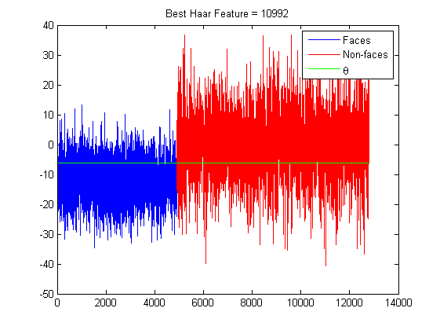 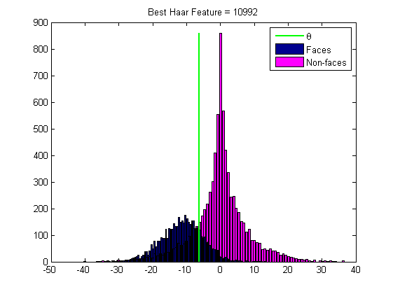
Sixth example : Display best Haar's Features from Adaboosting & FastAdaboosting
clear load viola_24x24 options = load('haar_dico_2.mat'); y = int8(y); II = image_integral_standard(X); [Ny , Nx , P] = size(II); Nimage = 110; nb_feats = 3; options.T = nb_feats; options.F = haar_featlist(Ny , Nx , options.rect_param); I = X(: , : , Nimage); index = randperm(length(y)); tic,options.param0 = haar_adaboost_binary_train_cascade(II(: , : , index) , y(index) , options);,toc %a bit long ....% options.G = Haar_matG(Ny , Nx , options.rect_param); tic,options.param1 = fast_haar_adaboost_binary_train_cascade(II(: , : , index) , y(index) , options);,toc figure imagesc(I) hold on best_feats = (options.F(: , options.param0(1 , 1:nb_feats))); x = double(best_feats(2 , :)) + 0.5 ; y = double(best_feats(3 , :)) + 0.5; w = best_feats(4 , :); h = best_feats(5 , :); indR = fix(best_feats(6 , :) + 1)/10 + 1; R = options.rect_param(4 , indR); for f = 1 : nb_feats for r = 0:R(f)-1 coeffw = w(f)/options.rect_param(2 , indR(f) + r); coeffh = h(f)/options.rect_param(3 , indR(f) + r); xr = (x(f) + double(coeffw*options.rect_param(6 , indR(f) + r))); yr = (y(f) + double(coeffh*options.rect_param(7 , indR(f) + r))) ; wr = double(coeffw*(options.rect_param(8 , indR(f) + r) - 0)); hr = double(coeffh*(options.rect_param(9 , indR(f) + r) - 0)); s = options.rect_param(10 , indR(f) + r); if (s == 1) color = [0.9 0.9 0.9]; else color = [0.1 0.1 0.1]; end hh = rectangle('Position', [xr, yr , wr , hr] ); p = patch([xr , xr+wr , xr + wr , xr] , [yr , yr , yr + hr , yr + hr] , color); alpha(p , 0.8); set(hh , 'linewidth' , 2 , 'EdgeColor' , [1 0 0]) end end hold off title(sprintf('Best %d Haar features with Adaboost' , nb_feats) , 'fontsize' , 13) colormap(gray) figure imagesc(I) hold on best_feats = (options.F(: , options.param1(1 , 1:nb_feats))); x = double(best_feats(2 , :)) + 0.5 ; y = double(best_feats(3 , :)) + 0.5; w = best_feats(4 , :); h = best_feats(5 , :); indR = fix(best_feats(6 , :) + 1)/10 + 1; R = options.rect_param(4 , indR); for f = 1 : nb_feats for r = 0:R(f)-1 coeffw = w(f)/options.rect_param(2 , indR(f) + r); coeffh = h(f)/options.rect_param(3 , indR(f) + r); xr = (x(f) + double(coeffw*options.rect_param(6 , indR(f) + r))); yr = (y(f) + double(coeffh*options.rect_param(7 , indR(f) + r))) ; wr = double(coeffw*(options.rect_param(8 , indR(f) + r) - 0)); hr = double(coeffh*(options.rect_param(9 , indR(f) + r) - 0)); s = options.rect_param(10 , indR(f) + r); if (s == 1) color = [0.9 0.9 0.9]; else color = [0.1 0.1 0.1]; end hh = rectangle('Position', [xr, yr , wr , hr] ); p = patch([xr , xr+wr , xr + wr , xr] , [yr , yr , yr + hr , yr + hr] , color); alpha(p , 0.8); set(hh , 'linewidth' , 2 , 'EdgeColor' , [1 0 0]) end end hold off title(sprintf('Best %d Haar features with FastAdaboost' , nb_feats) , 'fontsize' , 13) colormap(gray) % disp('Press key to continue') % pause
Elapsed time is 612.424368 seconds. Elapsed time is 2.327558 seconds.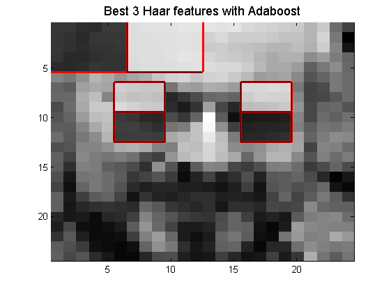
Seventh example : FastAdaboosting on Haar's features with 2 different types of pattern
clear load viola_24x24 options = load('haar_dico_2.mat'); [Ny , Nx , P] = size(X); options.T = 100; options.fine_threshold = 1; II = image_integral_standard(X); y = int8(y); indp = find(y == 1); indn = find(y ==-1); options.F = haar_featlist(Ny , Nx , options.rect_param); options.G = Haar_matG(Ny , Nx , options.rect_param); tic,options.param = fast_haar_adaboost_binary_train_cascade(II , y , options);,toc [yest , fx] = haar_adaboost_binary_predict_cascade(II , options); tp = sum(yest(indp) == y(indp))/length(indp) fp = 1 - sum(yest(indn) == y(indn))/length(indn) perf = sum(yest == y)/length(y) [tpp , fpp] = basicroc(y , fx); figure plot(fx) figure plot(fpp , tpp , 'linewidth' , 2) axis([-0.02 , 1.02 , -0.02 , 1.02]) grid on title(sprintf('ROC for Fastadaboosting with T = %d' , options.T)) figure plot(abs(options.param(3 , :)) , 'linewidth' , 2) grid on xlabel('Weaklearner m') ylabel('|a_m|') title('Weights of the Weaklearner') % disp('Press key to continue') % pause
Elapsed time is 56.590578 seconds.
tp =
0.96440195280716
fp =
0.0204522357723578
perf =
0.973725367532061
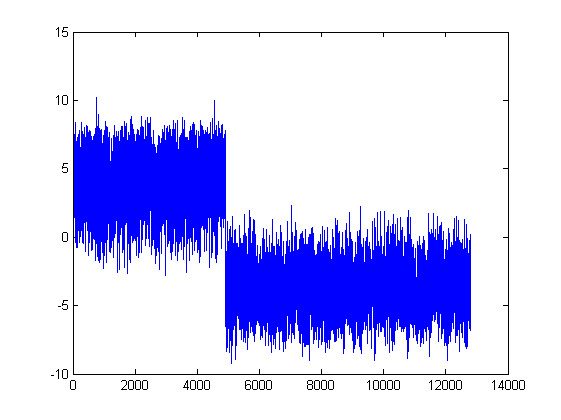 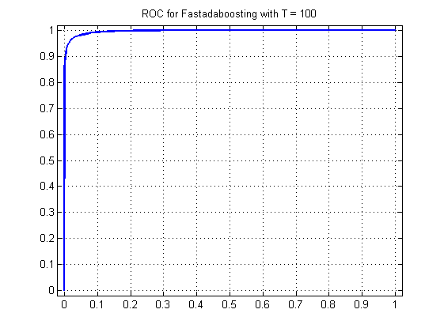 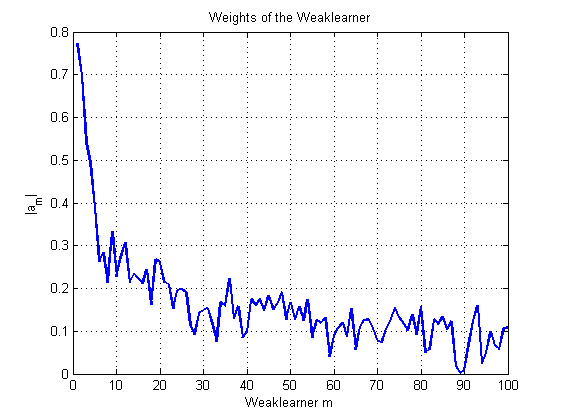